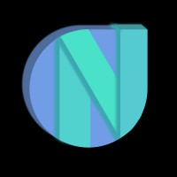

NEWTON SCHOOL CODING CLUB SRMIST.
Newton School Coding Club at SRMIST is a collective of student developers, systems builders, and algorithmic problem-solvers shipping software that matters.

NSCC SRMISTNewton School Coding Club at SRMIST is a collective of student developers, systems builders, and algorithmic problem-solvers shipping software that matters.